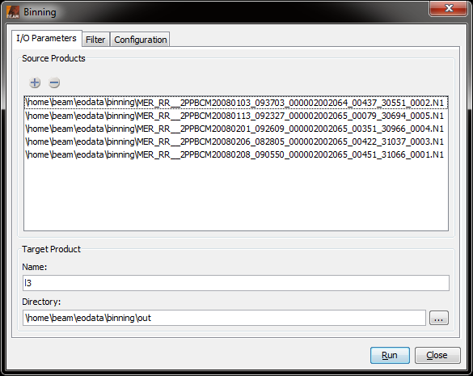

| Level 3 Binning Operator (GPF) |
|
Using the I/O Parameters tab, the input products can be set, as well as the target product's name and target directory. See the screenshot below.

When the Run-button is clicked, the binning is performed according to the preferences that are specified in the "Filter-" and the "Configuration"-tabs.As long as the area of an input pixel is small compared to the area of a bin, a simple binning is sufficient. In this case, the geodetic center coordinate of the Level 2 pixel is used to find the bin in the Level 3 grid whose area is intersected by this point. If the area of the contributing pixel is equal or even larger than the bin area, this simple binning will produce composites with insufficient accuracy and visual artefacts such as Moiré effects will dominate the resulting datasets.
The following figure illustrates this problem.

Level 2 grid (blue) and Level 3 grid (yellow)
The blue chessboard grid refers to the input data, the yellow one refers to the final Level 3 grid. As the figure clearly shows, single Level 2 pixels cannot be uniquely be assigned to single bins.
Supersampling parameter can be used to reduce or avoid the Moiré effect. The Moirè effect usually occurs when the spatial resolution used for the binning is similar to or smaller than the input pixel resolution. The supersampling subdivides every input pixel to n x n subpixels which all have the same values but different and unique geographical coordinates. This way, an input pixel may be distributed to more than one adjacent bin cell.
explain output binned data